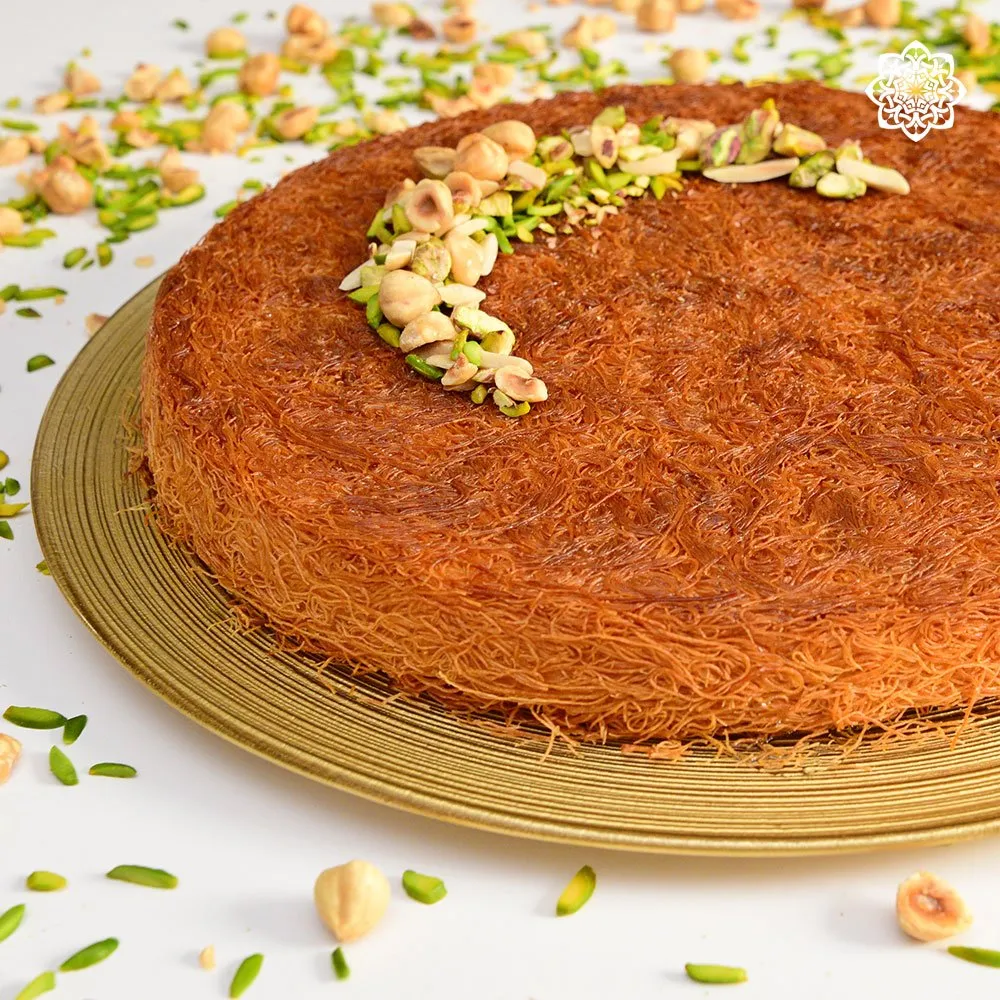

Kunafa

Description
Knafeh is a popular traditional dessert of Fatimid origin,
made with spun pastry called kataifi, soaked in a sweet,
sugar-based syrup called attar, and typically layered with cheese,
or with other ingredients such as clotted cream, pistachio or nuts, depending on the region.
It is popular in the Middle East.
Ingredients
- Kunafa dough
- pistachio
- Ghee
- Sugar Syrup
- Mozzarilla
Steps
- If you haven’t already, you’ll first need to prepare the sugar syrup –
this takes just a few minutes. For kunafa,
it’s typical to use a 2:1 ratio of sugar –
though you could use 1.5:1 if preferred.
-
Kataifi dough comes in a package as very long strands. So the first thing to do is to get that down into small pieces. The easiest way to do this is to blitz it in a food processor or blender a few times. Alternatively, you can hand chop the dough into around 3/4-inch pieces.
Once processed into small pieces, transfer the dough strands to a large bowl and combine with the melted butter or ghee. Use your hands to mix the ingredients well.
-
Prepare your baking pan by greasing it with oil or butter. I used a 12-inch/30cm round pan. Transfer half of the kataifi dough to the pan and use your hands or something flat-bottomed (like a glass) to spread and level out the layer.
Then, add the cheese, spreading evenly. You can either add slices of mozzarella or shred it – either will work well. I recommend leaving an inch of space around the outside so the cheese doesn’t ooze out the sides of the kunafa.
Finally, add the remaining dough and level it, pressing lightly.
- Transfer the baking pan to the center rack in your oven and bake for 45-60 minutes until the kunafa is a deep golden-brown color.
Once ready, remove the pastry from the oven and immediately pour the syrup over it. I recommend doing so from the outer edges to the center in a circular motion.
Then, set it aside for 10 minutes to allow it to absorb all the syrup.
Finally, top the pastry with ground pistachios, slice, and serve while still warm (for the ultimate cheese pull dessert!) or at room temperature.